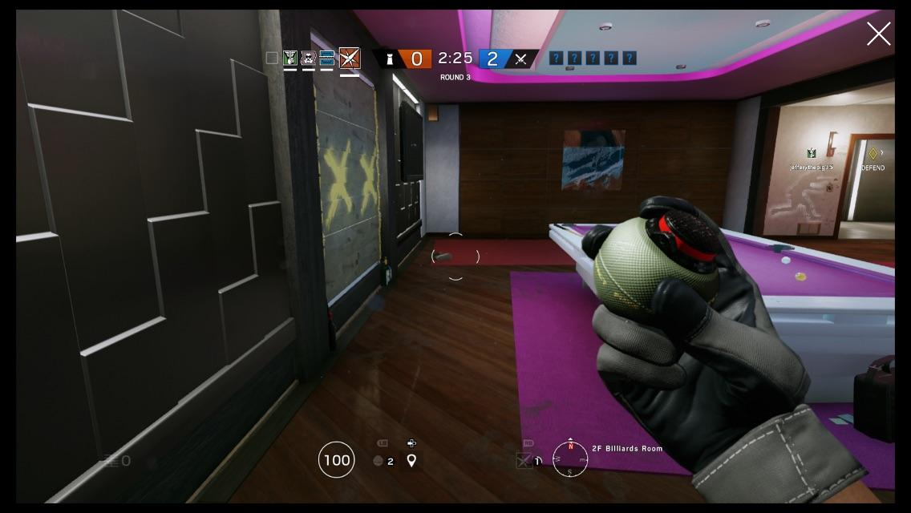
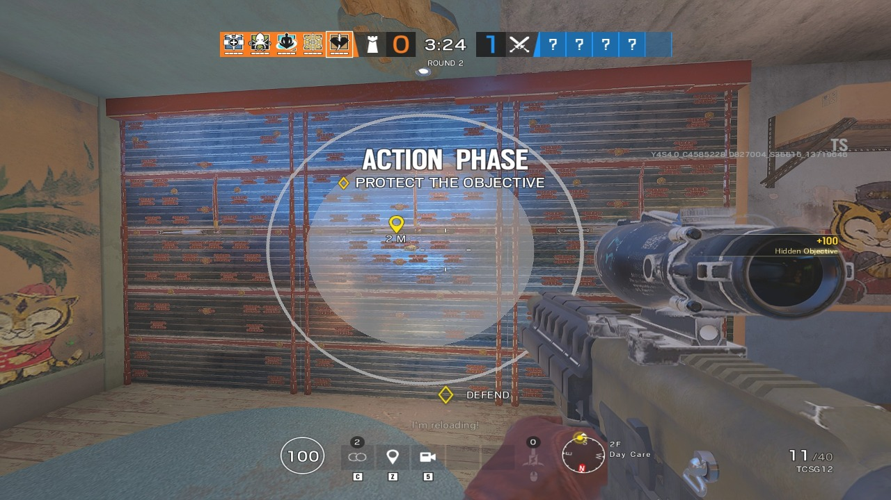
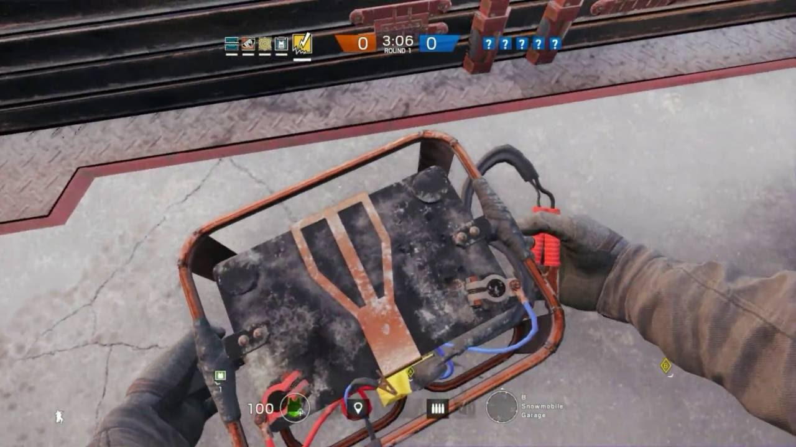

Bandit trick, Kaid trick e impct trick
Para los menos conocedores del mundo de Rainbow six siege empezaremos por explicar que
son estas tres fundamentales tácticas defensivas y todo lo necesario para ser un maestro
defensor.
Es importante entender que en el juego contamos con múltiples agentes que tienen la
capacidad de modificar físicamente el mapa, esto abre infinitas posibilidades y estrategias que
de no ser por Thermite, Ace y las nuevas cargas demoledoras pesadas que múltiples agentes
atacantes pueden portar serian imposibles. Y justamente por esto existen sus counter, mas
especificamente Bandit, Kaid, mute y como veremos enseguida cualquier defensor con
explosivos, ya sean granadas de impacto o cargas de C4.
Ahora bien, que son y para que sirven estos “trucos”. Pues son tácticas cuyo fin es evitar que
los atacantes antes mencionados abran las paredes reforzadas por los defensores utilizando
las habilidades u objetos consumibles que tienen determinados defensores.

Bandit trick
Empecemos por el Bandit trick, como ya sabemos las baterias de Bandit electrifican las
paredes reforzadas y destruyen cualquier dispositivo de apertura que se coloque mientras
esten activas, justamentes este es el problema.
Tatcher, el atacante mas temido por los defensores menos hábiles y ¿por que no? por algunos
de los mas experimentados. Gracias a este agente, otros como thermite ya no deben temer a
las paredes electrificadas pues su habilidad (Granada PEM) es capaz de inutilizar
temporalmente las baterías de Bandit y las garras de Kaid. Por esto es tan importante que un
buen Bandit sepa hacer este truco.
Nuestro objetivo sera romper la carga demoledora justo antes de que esta detone, pero
¿Cómo logramos esto? Pues con Bandit es bastante sencillo: Para empezar debemos abrir un
pequeño agujero en la pared antes de reforzarla, esto nos permitirá escuchar mejor cuando un
atacante se acerque a nuestro refuerzo, luego debemos aguantar la posición hasta que
escuchemos que colocan una carga en la pared e inmediatamente colocar la batería en el
refuerzo correcto. Si lo hacemos en el momento justo lo lograremos incluso aunque Tatcher
haya tirado su granada PEM.
Nota: Los agujeros que hagamos en la pared antes de reforzarla deben ir uno en cada pared
individual, esto para identificar en que pared ponen la carga.

Kaid trick
El Kaid trick es muy parecido al Bandit trick, la diferencia radica en los tiempos. Colocar una
batería de Bandit lleva aproximada mente tres segundos, en cambio la garra de Kaid tarda casi
cinco segundos en activarse y electrificar el refuerzo.
En si esto no tiene nada de malo, el problema es que la carga de Thermite tarda
aproximadamente lo mismo en detonar desde que este la coloca en la pared que la garra de
kaid en activarse desde que esta deja su mano (Seis segundos la carga de Thermite y cinco
segundos la garra de Kaid). El secreto acá esta en prestar atención y lanzar la garra justo
cuando escuchamos a thermite colocar su carga y de esta forma destruirla justo antes de que
detone.
Pero ¿Que hacemos contra el SELMA de Ace? La habilidad de este agente tarda mucho menos
en detonar que la de thermite, tardando solo cuatro segundos en detonar desde que Ace la
despliega, Kaid no tiene posibilidad con sus pobres 5 segundos de demora... ¿O si? Pues la
manera de evitar esto es lanzando la garra y volviendo a recogerla constantemente hasta que
escuchemos al SELMA tocar la pared, el tiempo es muy justo y la jugada muy precisa pero con
practica resulta no solo efectiva sino frustrante para el operador enemigo.

Impact trick
Por ultimo tenemos el impact trick, este es mas fácil pero requiere de practica para entender y
calcular bien los lanzamientos. De mas esta decir que no es recomendable practicar este truco
con C4 ya que tiene mejores usos y de salir mal hace mucho mas daño.
Lo único que hay que entender es que para que la granada destruya el dispositivo enemigo la
explosión debe producirse afuera de la pared, osea del lado opuesto de la defensa. Para esto
debemos contar con una pared que en la parte superior, a la hora de colocar un refuerzo sobre
un pequeño espacio destructible que debemos abrir ya sea con una escopeta o con unas
rafagas de cualquier subfusil. Una vez abierto este espacio vamos a esperar a confirmar que un
atacante esta abriendo la pared, inmediatamente lanzamos una granada al techo justo afuera
de ese agujero que hicimos y la explosión debería de romper la carga enemiga.
Hay paredes que no tienen ese espacio arriba imposibilitando este truco, en cuyo caso
deberemos buscar otro lugar por el que detonar la granada del otro lado del refuerzo, pero
esto ya es cuestión de practica y un buen conocimiento de los mapas.